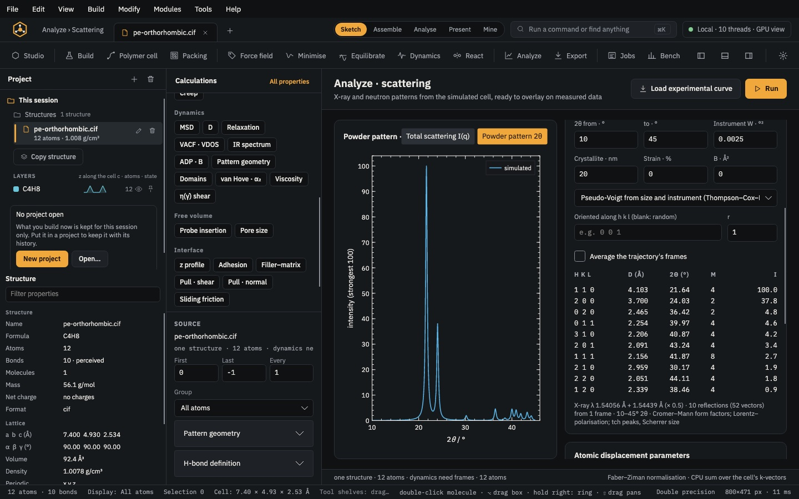
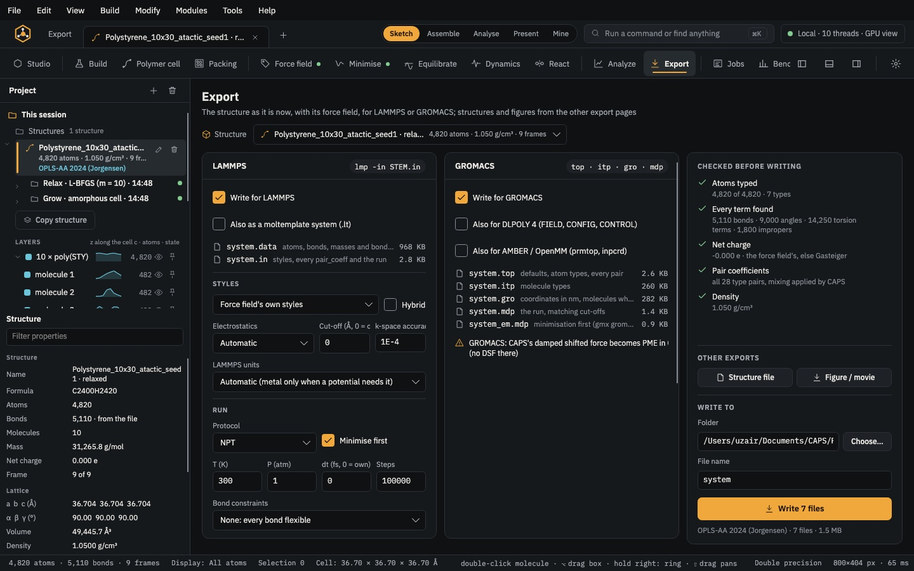

Run · module 20
Thermal properties
Heat transport and lattice properties of the open structure on one page: the thermal conductivity of a bulk material or a sheet by MD, and, for a crystal with its force field, phonon bands and heat capacity, thermal expansion, the dielectric and piezoelectric response and the melting point.
Open it Modules›Thermal conductivity…
- You start with
- A structure with a force field assigned. Phonons, expansion, the dielectric response and melting need a crystal.
- You get
- κ along x, y and z with its running integral or the slab temperatures, and LAMMPS inputs for the long run; phonon bands, DOS, sound speeds, C_v and S; the cell, α, B and C_p at each temperature; ε⁰, ε^∞, refractive indices, piezoelectric e and d and the reflectivity; the melting point from the Z curve.
Step by step
Say what the material is
Under Material, choose 3D bulk (κ along x, y, z) or 2D sheet (vacuum along z: in-plane κ, sheet conductance). CAPS does not guess.
For a sheet, set the effective thickness in Å; 0 takes the atoms' extent plus their van der Waals radii. κ of a sheet depends on this choice (graphite's interlayer spacing, 3.35 Å, is the usual one for graphene); the sheet conductance κ·t does not.
Choose the method
Green–Kubo (heat-flux autocorrelation, NVE) or Reverse NEMD (Müller-Plathe exchanges). Set T, the NVT run before sampling, the sampled time, the time step, how often to sample and the correlation time. NEMD also takes the flux axis, the number of slabs and how often kinetic energy is exchanged.
Run short here, long on a cluster
Run here is for a check: the card shows how many steps that is, and a laptop should stay at a few thousand. κ needs nanoseconds, so set LAMMPS sampled run · ps and press Write LAMMPS inputs…: the same method in LAMMPS (
compute heat/fluxoncompute centroid/stress/atom, orfix thermal/conductivity).Result gives κ along each axis; the plot at the bottom shows the running integral κ(t) or the slab temperatures.
Phonons of a crystal
On Lattice vibrations, Vibrations relaxes the atoms in a supercell of the crystal and finds the force constants by small displacements. You get the dispersion along a path through the Brillouin zone, the density of states per element, the sound speeds of the acoustic branches along a*, b* and c*, and the zero-point energy, C_v and S per cell. Along a polymer chain the fastest acoustic branch reflects the fibre's stiffness.
Thermal expansion
Thermal expansion (quasi-harmonic) computes phonons at strained cells and takes the cell at each temperature from the minimum of the free energy. As a whole (volume) scales the whole cell; Each axis on its own (a, b, c) shows anisotropy, such as a polymer crystal shrinking along its chains while it swells across them.
Set the strain range (0.020 by default) and the temperatures in K, then Expansion. The table gives a, b, c, V, α along each axis, B and C_p. A row marked * is extrapolated: widen the strain range.
Dielectric and piezoelectric response
Dielectric gives the static and high-frequency dielectric tensors, the refractive indices, the piezoelectric constants e and d and the infrared reflectivity, from the lattice dynamics of the force field. The electrons' part (ε^∞, the refractive index) needs a shell model. Useful for fillers and polymer crystals in sensing rubbers: ZnO, BaTiO₃, β-PVDF.
Melting point by the Z method
For an inorganic filler, a salt or a small-molecule crystal at its own volume. Give the starting temperatures (reach about twice the expected melting point), the steps of each run, the time step and how many extra runs to place between the last crystal and the first melted start, then Melt it.
Each start is one constant-energy run from the perfect crystal; the bottom of the Z that the runs draw on the T(E) plot is the melting point. The cell must be at least twice the cut-off wide. Polymer crystals melt more reliably in a heating scan.
The same without the Studio
Every Studio page calls the same core as the caps command and the caps Python package, so a step you clicked can be repeated in a script.
caps thermal cell.data --dimensionality 3d --method gk --temp 300 \
--lammps-input kappa.in # only the inputs; add --ps to run here too
caps phonons pe-orthorhombic.cif --ff oplsaa2024 --csv pe_phonons
caps qha pe-orthorhombic.cif --ff oplsaa2024 --mode axes --temps 0,100,200,300
caps dielectric periclase.cif --ff catlow1976-mgo
caps zmelt crystal.cif --ff FF.json --temps 600,1200,1800,2400 --bisect 3import caps
pe = caps.open("pe-orthorhombic.cif")
pe.field.assign("oplsaa2024")
print(pe.phonons()["sound"]) # m/s along a*, b*, c*
mgo = caps.open("periclase.cif")
mgo.field.assign("catlow1976-mgo")
print(mgo.dielectric()["eps0_principal"])
for row in mgo.qha(temperatures=(0, 300, 600))["rows"]:
print(row["T"], row["volume"], row["alpha_V"])Where to go next

Analyse & exportScattering & diffractionPowder patterns of any cell, Rietveld and Pawley fits of measured data, indexing, total scattering and displacement parameters from MD.
Analyse & exportExportLAMMPS, GROMACS, DL_POLY 4, AMBER/OpenMM and moltemplate decks, checked before they are written.